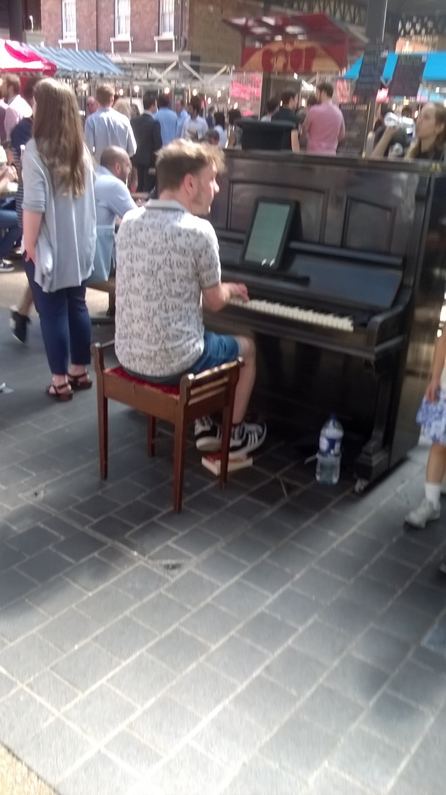

Smart Tabs #1
During my time at Makers Academy, I did participate in several projects and learnt a lot that way.
Once the studying at Makers would be done, I thought that I should keep doing projects and use them as a vector to keep my learning going.
The project seemed secondary but then something happen.
If you happen to walk through Spitafields market in London on a Friday, you might see this man playing the piano.

Like I did, you might notice the tablet the pianist is reading music from.
And like I did you may think "Wouldn't it be cool if the 'pages' were 'turning' as the music is playing, so the player could keep his fingers on the keys..."
And like I did, you may also think "What if it tracked your progress, like guitar hero but for people who can actually play music"
And like I did, you may also think "What about a composer mode ?"
Well if you did actually think all of that, you have no personality, it's my idea get your own.
Anyway it does seem like a technically challenging task to build an application that would do all of that, but still I will give it a shot